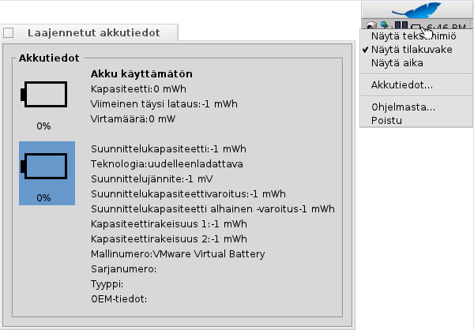

Virtatila
Virtatila
| Työpöytäpalkki: | ||
| Sijainti: | /boot/system/apps/PowerStatus | |
| Asetukset: | ~/config/settings/PowerStatus settings |
Virtatila näyttää tietoja akkutasosta, joten se on hyödyllinen vain sylimikroissa. Jos se ei ole vielä käynnissä, sovelman käynnistyessä kysytään, että avantaanko ohjelma ikkunatilassa vai Työpöytäpalkissa live-tilassa. Ikkunatilassa kykenet muuttamaan kuvakkeen kokoa muuttamalla ikkunan kokoa ja käyttämällä Replikantti-kahvaa sen raahaamiseksi Työpöydälle.
Milloin sovelma on asennettu, sitä käytetään hiiren kakkospainikkeen asiayhteysvalikosta.
Huomaa: Virtatila vaatii toimivan ACPI-tuen.
Asiayhteysvalikko tarjoaa nämä valitsimet:
| Näyttää akkutason prosenttina tai jäljelläolevan aikana. | ||
| Näyttää sovelman kuvakkeen. | ||
| Vuorottelee akkutason näyttämisen prosentteina tai jäljellä olevana aikana ( on oltava aktiivinen). | ||
| Näyttää laajennetun akkutiedot-ikkunan. | ||
| Näyttää Ohjelmasta-ikkunan. | ||
| Poistuu Virtatila-sovelmasta. |
Kun on aktiivinen, akkutaso näytetään ladattaessa hakasulkeissa.